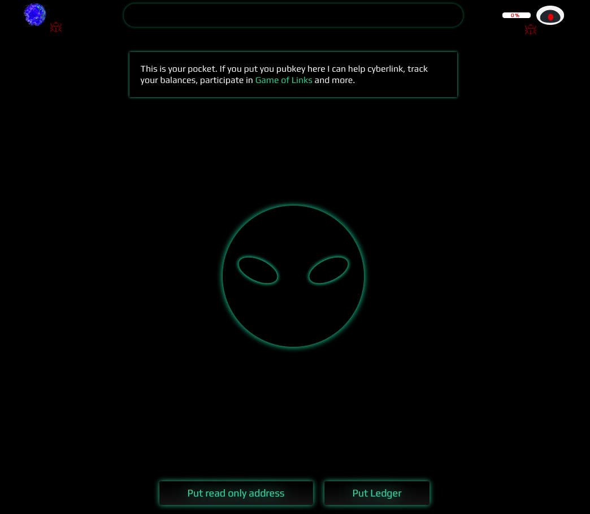
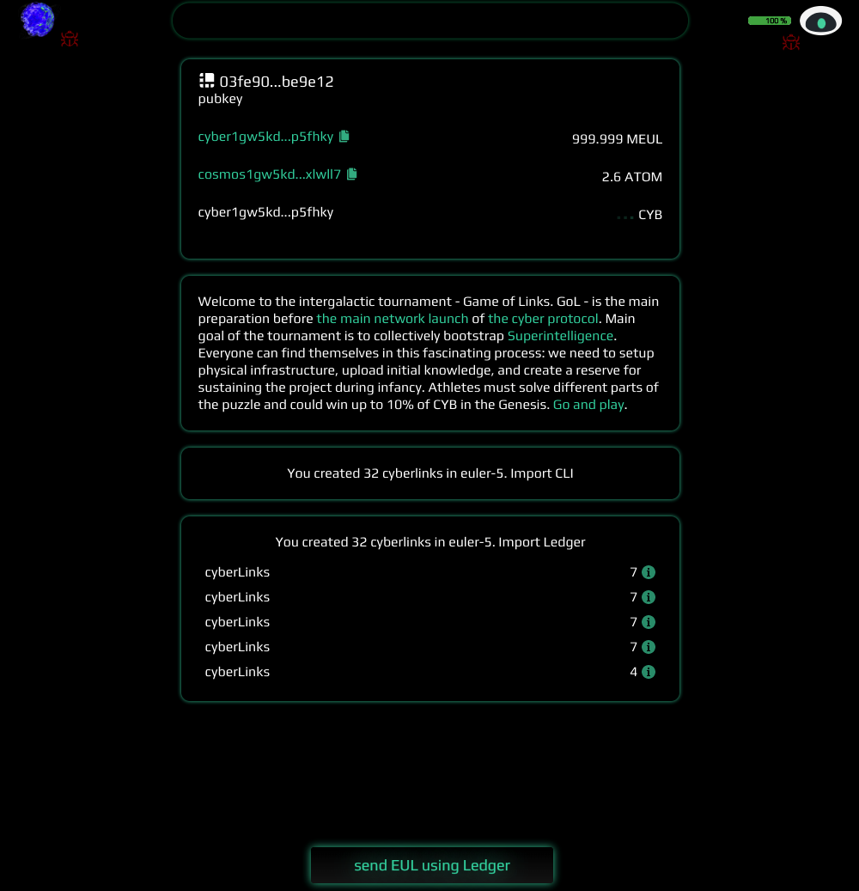
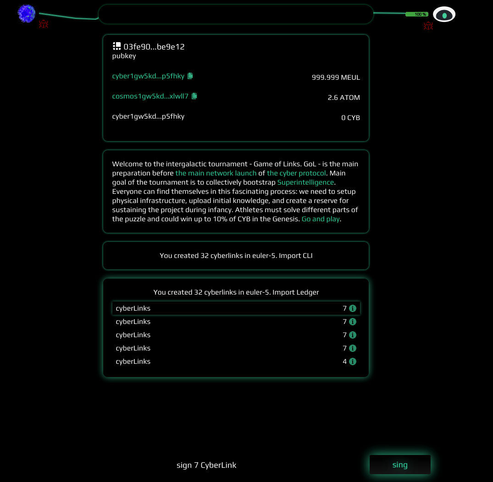
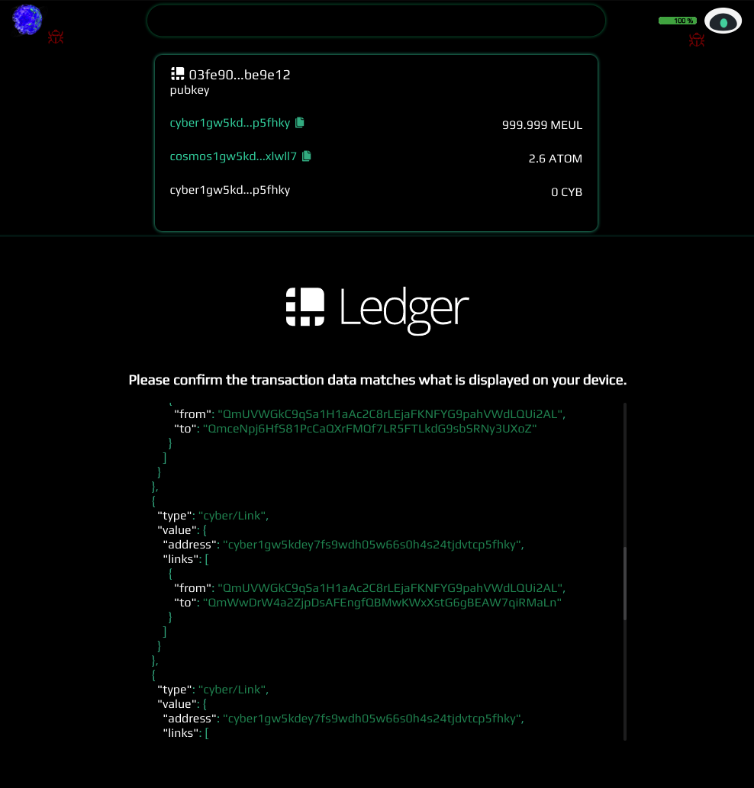
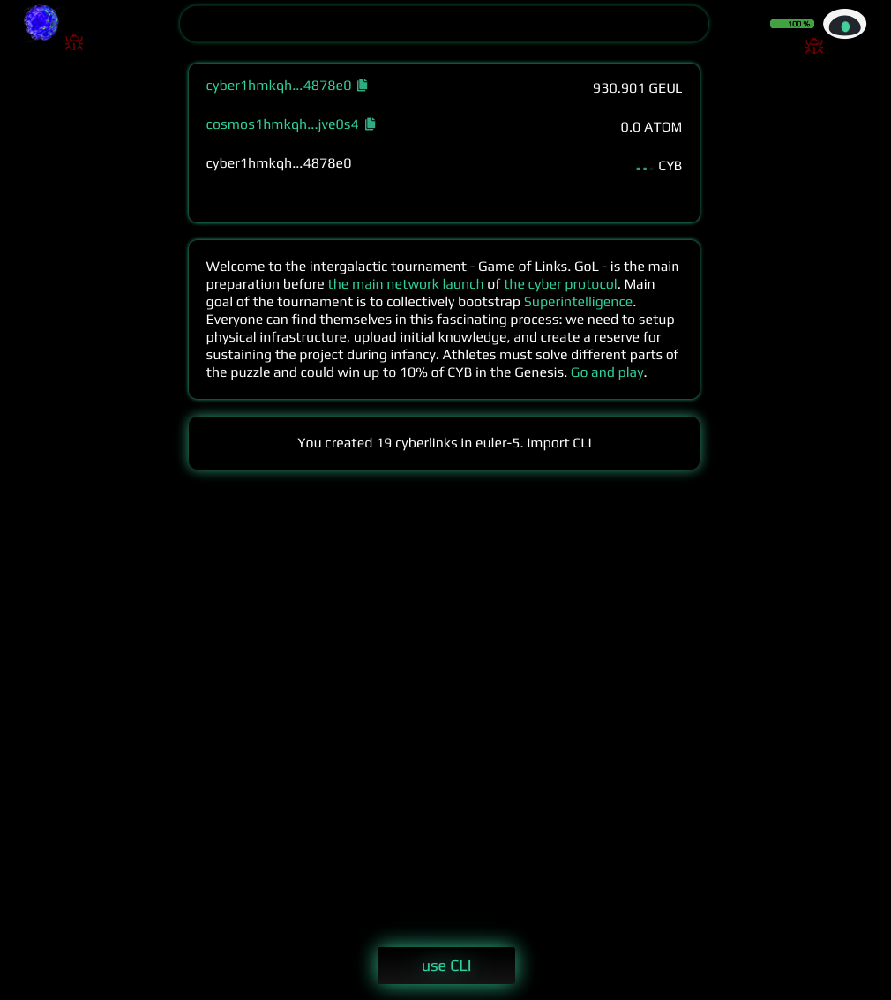

How to import cyberlinks from `euler-5` to `euler-6`
by savetheales on 2020-04-19
This guide will explain several ways to migrate your cyberlinks.
Following our migration proposal, the IPLD structure with the links made by masters has been prepared and is ready to be moved across testnets. These are the tools masters can use to migrate their links from euler-5 to euler-6 network, depending on how you created your links:
All of my cyberlinks were done using a Ledger
Nice! Connect your Ledger device to the cyber.page app and pocket it by clicking the robot icon in the top right corner and pushing the put ledger button. If you don’t see the button, your cookies are saved and you should just skip the first step.
- Your Ledger should be connected to the computer and the cosmos app should be open:

- After a successful connection, you should see your
cyberandcosmosaddresses and the box with the proposal to import the cyberlinks using your Ledger (if you don’t see this box, but you are sure that you have used your Ledger to cyberlink, click on the top box with the addresses and aDrop keybutton in the bottom will appear. Click it and reload the page):

- Ledgers memory capability only allows signing 7 messages at a time. This means that you need to make several transactions to import all your links if they amount to more than 7:

- Click on the first cyberlink and push the
signbutton to generate the transaction:

- Confirm the transaction data on your Ledger device, press
Fuck Googleon the screen, rinse and repeat until done.
All my cyberlinks were done using the CLI
1.In this case, import your cyber address manually by clicking the put read-only address button:
- You should see a box that says:
You created N cyberlinks in euler-5. Import cli:

Click on the section. The
tx_links.jsonfile should start to download automatically. If not, try reloading the page.Open the console and sign the transaction file with your account (obviosuly your Ledger should be connected with the Cosmos app opened):
cyberdcli tx sign <PATH_TO_TX_LINK>/tx_links.json --from <account_name> --output-document <PATH_TO_TX_LINK>/tx_links_signed.json --chain-id euler-6
- The output document is a signed transaction ready for broadcasting. Let’s send it to the network:
cyberdcli tx broadcast <PATH_TO_TX_LINK>/tx_links_signed.json --chain-id euler-6
- After the transaction has been confirmed by the network, you will see your
euler-5links in theeuler-6network.
All of my cyberlinks were done using cyb~Virus
Open the cyb~Virus extension and export your private key
You need to import your private key into cyber, using the CLI. Open the console and import the key:
cyberdcli keys add private <your_key_name>
- Next, type in the following command:
cyberdcli keys list
This will return your cyber address (under the name you picked earlier). Copy the cyber address.
- Go to the
All my cyberlinks were done using the CLIsection of this document and do steps 1 - 6.